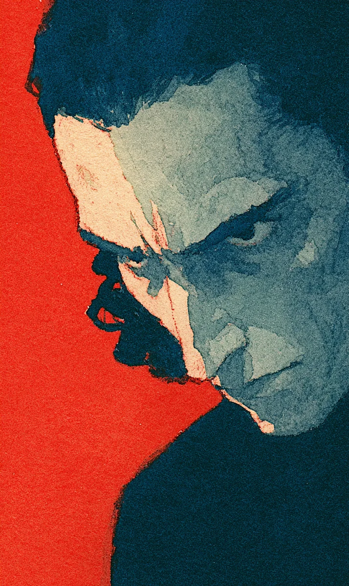

지하 제단의 공기가 끓고 있었다. 강무현은 계단을 내려서자마자 그것을 느꼈다. 피부 위로 흐르는 기류가 아니라, 뼛속까지 파고드는 진동. 살아 있는 무언가가 돌벽 너머에서 숨 쉬고 있었다.
[The air in the underground altar was boiling. Gang Muhyeon felt it the moment he descended the stairs. Not a current flowing over skin, but a vibration that bored into bone. Something alive was breathing beyond the stone walls.]
“늦으셨습니다.”
[”You’re late.”]
임하준이 기둥 뒤에서 나왔다. 스물셋의 얼굴에 핏기가 없었다. 두 손이 떨리고 있었지만 목소리만은 단단했다.
[Im Hajun stepped out from behind a pillar. His twenty-three-year-old face was drained of color. His hands trembled, but his voice alone was steady.]
“균열을 열었나.”
[”She opened the rift.”]
“한 시진 전에. 처음엔 통제하고 계셨는데…”
[”An hour ago. At first she had it under control, but…”]
하준의 시선이 제단 중앙으로 향했다. 무현은 그 시선을 따라갔고, 숨을 멈췄다.
[Hajun’s gaze turned to the center of the altar. Muhyeon followed it, and stopped breathing.]
채은하가 허공에 떠 있었다. 정확히는, 그녀의 몸 아래에서 솟아오른 붉은 결이 그녀를 붙잡고 있었다. 결은 이 세계의 근원이었다. 산맥의 뿌리부터 바다의 밑바닥까지 흐르는 힘의 맥. 술사들은 그 표면만을 빌려 쓸 수 있었고, 그것이 천 년간의 법도였다. 표면 아래로 파고드는 자는 결에게 삼켜진다. 예외는 없었다.
[Chae Eunha was floating in the air. More precisely, red veins of power surging from beneath her body held her in place. The veins were the world’s foundation. Channels of force flowing from the roots of mountain ranges to the bottom of the sea. Casters could only borrow from their surface, and that had been the law for a thousand years. Those who dug beneath the surface were swallowed by the veins. No exceptions.]
그런데 은하는 삼켜지지 않았다. 결이 그녀의 팔과 다리를 감싸고, 피부 아래로 스며들고, 눈에서 붉은 빛이 새어 나왔지만, 그녀는 여전히 숨을 쉬고 있었다.
[And yet Eunha had not been swallowed. The veins wrapped around her arms and legs, seeped beneath her skin, red light leaked from her eyes, but she was still breathing.]
“사부님이 말씀하셨습니다.” 하준이 낮은 목소리로 말했다. “결의 심층에 도달하면 죽은 자의 술식을 되돌릴 수 있다고. 그분의 딸을…”
[”Master said,” Hajun spoke in a low voice, “that if she reached the deep layer of the veins, she could reverse a dead person’s spell. Her daughter…”]
“알고 있다.”
[”I know.”]
무현은 외투를 벗었다. 왼팔에 새겨진 해문이 드러났다. 검은 문양이 빛을 흡수하듯 어둡게 빛났다. 해주사의 표식. 술식을 푸는 자의 낙인.
[Muhyeon removed his coat. The seal-marks carved into his left arm were revealed. The black patterns glowed darkly as if absorbing light. The mark of a spell-breaker. The brand of one who undoes magic.]
그가 제단에 한 발을 올렸을 때 은하의 입이 열렸다.
[When he placed one foot on the altar, Eunha’s mouth opened.]
“오지 마.”
[”Don’t come.”]
그녀의 목소리가 아니었다. 수백 개의 목소리가 겹쳐진 울림이었다. 제단의 돌이 갈라지고, 붉은 결이 바닥을 뚫고 솟아올라 무현의 발목을 감쌌다. 뜨거웠다. 살이 타는 냄새가 났다.
[It was not her voice. It was a resonance of hundreds of voices layered on top of one another. The altar stone cracked, and red veins burst through the floor, wrapping around Muhyeon’s ankle. It was hot. The smell of burning flesh rose.]
“은하.”
[”Eunha.”]
무현은 멈추지 않았다. 해문이 반응했다. 왼팔의 문양이 푸른빛으로 바뀌며 결의 열기를 밀어냈다. 그는 한 걸음 더 나아갔다.
[Muhyeon did not stop. The seal-marks responded. The patterns on his left arm shifted to blue light and pushed back the veins’ heat. He took one more step forward.]
“네가 결의 심층까지 갔다는 건 안다. 네가 딸을 구하려 한다는 것도.” 그의 목소리가 갈라졌다. “하지만 네가 지금 쥐고 있는 건 딸의 생명이 아니라 이 도시 삼만 명의 목숨이다.”
[”I know you went to the deep layer of the veins. I know you’re trying to save your daughter.” His voice cracked. “But what you’re holding right now is not your daughter’s life. It’s the lives of thirty thousand people in this city.”]
은하의 붉은 눈에서 눈물이 흘렀다. 결의 목소리가 아닌, 그녀 자신의 목소리가 새어 나왔다. 가늘고, 부서질 듯한 속삭임.
[Tears flowed from Eunha’s red eyes. Not the voice of the veins, but her own voice leaked through. A thin, fragile whisper.]
“알아. 알고 있어.”
[”I know. I know.”]
무현은 왼팔을 들어 올렸다. 해문이 최대 출력으로 빛났다. 결을 끊는 것이 아니라, 은하가 쥐고 있는 심층의 연결을 부드럽게 풀어내야 했다. 한순간이라도 잘못하면 결이 폭주하고, 이 도시는 사라진다.
[Muhyeon raised his left arm. The seal-marks shone at maximum output. He didn’t need to sever the veins, but gently unravel the deep-layer connection Eunha was gripping. One wrong instant and the veins would go berserk, and this city would vanish.]
하준이 뒤에서 외쳤다. “해주사님, 제가 도울 수 있습니다. 사부님이 가르쳐 주신 보조 술식이…”
[Hajun shouted from behind. “Spell-breaker, I can help. The support spell my master taught me…”]
“네 사부가 가르쳐 준 술식이 바로 이 상황을 만든 거다.”
[”The spell your master taught you is exactly what created this situation.”]
무현의 말에 하준이 입을 다물었다.
[At Muhyeon’s words, Hajun closed his mouth.]
붉은 결과 푸른 해문이 부딪혔다. 지하 제단 전체가 울렸다. 무현은 은하의 손을 잡았다. 그녀의 손가락은 얼음처럼 차가웠고, 결은 불처럼 뜨거웠다. 그 사이에서 그의 해문이 천천히 매듭을 풀기 시작했다.
[The red veins and the blue seal-marks collided. The entire underground altar shook. Muhyeon took Eunha’s hand. Her fingers were cold as ice, and the veins were hot as fire. Between them, his seal-marks slowly began to untie the knot.]
은하가 속삭였다. “무현아. 수빈이가 웃는 걸 다시 보고 싶었을 뿐이야.”
[Eunha whispered. “Muhyeon. I just wanted to see Subin smile again.”]
무현은 대답하지 않았다. 대답할 수 없었다. 그의 손에서 마지막 매듭이 풀리고 있었고, 그 매듭 안에는 채수빈이라는 아이의 이름이 새겨져 있었다. 매듭을 푸는 순간, 그 아이를 되살릴 마지막 가능성도 함께 사라진다.
[Muhyeon did not answer. He could not. The last knot was unraveling in his hands, and inside that knot was carved the name of a child called Chae Subin. The moment the knot came undone, the last possibility of bringing that child back would vanish with it.]
그의 손이 멈추지 않았다.
[His hands did not stop.]